<!DOCTYPE html>
<html>
<head><meta name="generator" content="Hexo 3.8.0">
    <meta charset="utf-8">
    
    <title>Cent OS Tomcat 설치 | J Dev</title>
    <meta name="viewport" content="width=device-width, initial-scale=1, maximum-scale=1">
    
        <meta name="keywords" content="linux,centos">
    
    <meta name="description" content="Tomcat 설치 설치 옵션에 따라 Tomcat이 이미 설치가 되어 있을 수 있습니다. 확인은 아래의 명령어로 확인합니다.  1$ yum list installed | grep tomcat  설치가 되어있다면 아래 처럼 확인 할 수 있습니다.    설치가 되어 있지 않은 경우는 아래의 명령어로 설치를 진행합니다.  1$ yum install -y tomca">
<meta name="keywords" content="linux,centos">
<meta property="og:type" content="article">
<meta property="og:title" content="Cent OS Tomcat 설치">
<meta property="og:url" content="http://woonyzzang.github.com/2019/09/17/cent-os-tomcat-install/index.html">
<meta property="og:site_name" content="J Dev">
<meta property="og:description" content="Tomcat 설치 설치 옵션에 따라 Tomcat이 이미 설치가 되어 있을 수 있습니다. 확인은 아래의 명령어로 확인합니다.  1$ yum list installed | grep tomcat  설치가 되어있다면 아래 처럼 확인 할 수 있습니다.    설치가 되어 있지 않은 경우는 아래의 명령어로 설치를 진행합니다.  1$ yum install -y tomca">
<meta property="og:locale" content="en">
<meta property="og:image" content="http://woonyzzang.github.com/2019/09/17/cent-os-tomcat-install/cent-os-tomcat-install_1.png">
<meta property="og:updated_time" content="2019-09-16T16:10:38.454Z">
<meta name="twitter:card" content="summary">
<meta name="twitter:title" content="Cent OS Tomcat 설치">
<meta name="twitter:description" content="Tomcat 설치 설치 옵션에 따라 Tomcat이 이미 설치가 되어 있을 수 있습니다. 확인은 아래의 명령어로 확인합니다.  1$ yum list installed | grep tomcat  설치가 되어있다면 아래 처럼 확인 할 수 있습니다.    설치가 되어 있지 않은 경우는 아래의 명령어로 설치를 진행합니다.  1$ yum install -y tomca">
<meta name="twitter:image" content="http://woonyzzang.github.com/2019/09/17/cent-os-tomcat-install/cent-os-tomcat-install_1.png">
    
    <link rel="canonical" href="http://woonyzzang.github.com/2019/09/17/cent-os-tomcat-install/">

    

    
        <link rel="icon" href="/images/favicon.png">
    

    <link rel="stylesheet" href="/libs/font-awesome/css/font-awesome.min.css">
    <link rel="stylesheet" href="/libs/titillium-web/styles.css">
    <link rel="stylesheet" href="/libs/source-code-pro/styles.css">

    <link rel="stylesheet" href="/css/style.css">

    <script src="/libs/jquery/2.0.3/jquery.min.js"></script>
    
    
        <link rel="stylesheet" href="/libs/lightgallery/css/lightgallery.min.css">
    
    
    

</head>
</html>
<body>
    <div id="wrap">
        <header id="header">
    <div id="header-outer" class="outer">
        <div class="container">
            <div class="container-inner">
                <div id="header-title">
                    <h1 class="logo-wrap">
                        <a href="/" class="logo"></a>
                    </h1>
                    
                        <h2 class="subtitle-wrap">
                            <p class="subtitle">Web Development Story Blog</p>
                        </h2>
                    
                </div>
                <div id="header-inner" class="nav-container">
                    <a id="main-nav-toggle" class="nav-icon fa fa-bars"></a>
                    <div class="nav-container-inner">
                        <ul id="main-nav">
                            
                                <li class="main-nav-list-item">
                                    <a class="main-nav-list-link" href="/">Home</a>
                                </li>
                            
                                        <ul class="main-nav-list"><li class="main-nav-list-item"><a class="main-nav-list-link" href="/categories/App/">App</a><ul class="main-nav-list-child"><li class="main-nav-list-item"><a class="main-nav-list-link" href="/categories/App/Ionic/">Ionic</a></li></ul></li><li class="main-nav-list-item"><a class="main-nav-list-link" href="/categories/Editor/">Editor</a><ul class="main-nav-list-child"><li class="main-nav-list-item"><a class="main-nav-list-link" href="/categories/Editor/SublimeText/">SublimeText</a></li><li class="main-nav-list-item"><a class="main-nav-list-link" href="/categories/Editor/Visualstudio/">Visualstudio</a></li><li class="main-nav-list-item"><a class="main-nav-list-link" href="/categories/Editor/Webstorm/">Webstorm</a></li></ul></li><li class="main-nav-list-item"><a class="main-nav-list-link" href="/categories/Etc/">Etc</a><ul class="main-nav-list-child"><li class="main-nav-list-item"><a class="main-nav-list-link" href="/categories/Etc/Log/">Log</a></li></ul></li><li class="main-nav-list-item"><a class="main-nav-list-link" href="/categories/FrontEnd/">FrontEnd</a><ul class="main-nav-list-child"><li class="main-nav-list-item"><a class="main-nav-list-link" href="/categories/FrontEnd/Angular-js/">Angular.js</a></li><li class="main-nav-list-item"><a class="main-nav-list-link" href="/categories/FrontEnd/Backbone-js/">Backbone.js</a></li><li class="main-nav-list-item"><a class="main-nav-list-link" href="/categories/FrontEnd/D3-js/">D3.js</a></li><li class="main-nav-list-item"><a class="main-nav-list-link" href="/categories/FrontEnd/Javascript-js/">Javascript.js</a></li><li class="main-nav-list-item"><a class="main-nav-list-link" href="/categories/FrontEnd/Node-js/">Node.js</a></li><li class="main-nav-list-item"><a class="main-nav-list-link" href="/categories/FrontEnd/React-js/">React.js</a></li><li class="main-nav-list-item"><a class="main-nav-list-link" href="/categories/FrontEnd/Require-js/">Require.js</a></li><li class="main-nav-list-item"><a class="main-nav-list-link" href="/categories/FrontEnd/Webpack/">Webpack</a></li><li class="main-nav-list-item"><a class="main-nav-list-link" href="/categories/FrontEnd/jQuery/">jQuery</a></li></ul></li><li class="main-nav-list-item"><a class="main-nav-list-link" href="/categories/OS/">OS</a><ul class="main-nav-list-child"><li class="main-nav-list-item"><a class="main-nav-list-link" href="/categories/OS/CentOS/">CentOS</a></li><li class="main-nav-list-item"><a class="main-nav-list-link" href="/categories/OS/Mac/">Mac</a></li><li class="main-nav-list-item"><a class="main-nav-list-link" href="/categories/OS/Ubuntu/">Ubuntu</a></li><li class="main-nav-list-item"><a class="main-nav-list-link" href="/categories/OS/Windows/">Windows</a></li></ul></li><li class="main-nav-list-item"><a class="main-nav-list-link" href="/categories/Server/">Server</a><ul class="main-nav-list-child"><li class="main-nav-list-item"><a class="main-nav-list-link" href="/categories/Server/ASP/">ASP</a></li><li class="main-nav-list-item"><a class="main-nav-list-link" href="/categories/Server/AWS/">AWS</a></li><li class="main-nav-list-item"><a class="main-nav-list-link" href="/categories/Server/Docker/">Docker</a></li><li class="main-nav-list-item"><a class="main-nav-list-link" href="/categories/Server/Gitlab/">Gitlab</a></li></ul></li><li class="main-nav-list-item"><a class="main-nav-list-link" href="/categories/Tools/">Tools</a><ul class="main-nav-list-child"><li class="main-nav-list-item"><a class="main-nav-list-link" href="/categories/Tools/APMSETUP/">APMSETUP</a></li><li class="main-nav-list-item"><a class="main-nav-list-link" href="/categories/Tools/Fiddler/">Fiddler</a></li><li class="main-nav-list-item"><a class="main-nav-list-link" href="/categories/Tools/OpenSSl/">OpenSSl</a></li><li class="main-nav-list-item"><a class="main-nav-list-link" href="/categories/Tools/VMware/">VMware</a></li></ul></li><li class="main-nav-list-item"><a class="main-nav-list-link" href="/categories/Web/">Web</a><ul class="main-nav-list-child"><li class="main-nav-list-item"><a class="main-nav-list-link" href="/categories/Web/CSS/">CSS</a></li><li class="main-nav-list-item"><a class="main-nav-list-link" href="/categories/Web/Descktop/">Descktop</a></li><li class="main-nav-list-item"><a class="main-nav-list-link" href="/categories/Web/HTML/">HTML</a></li><li class="main-nav-list-item"><a class="main-nav-list-link" href="/categories/Web/Mobile/">Mobile</a></li><li class="main-nav-list-item"><a class="main-nav-list-link" href="/categories/Web/Others/">Others</a></li></ul></li></ul>
                                    
                        </ul>
                        <nav id="sub-nav">
                            <div id="search-form-wrap">

    <form class="search-form">
        <input type="text" class="ins-search-input search-form-input" placeholder="Search">
        <button type="submit" class="search-form-submit"></button>
    </form>
    <div class="ins-search">
    <div class="ins-search-mask"></div>
    <div class="ins-search-container">
        <div class="ins-input-wrapper">
            <input type="text" class="ins-search-input" placeholder="Type something...">
            <span class="ins-close ins-selectable"><i class="fa fa-times-circle"></i></span>
        </div>
        <div class="ins-section-wrapper">
            <div class="ins-section-container"></div>
        </div>
    </div>
</div>
<script>
(function (window) {
    var INSIGHT_CONFIG = {
        TRANSLATION: {
            POSTS: 'Posts',
            PAGES: 'Pages',
            CATEGORIES: 'Categories',
            TAGS: 'Tags',
            UNTITLED: '(Untitled)',
        },
        ROOT_URL: '/',
        CONTENT_URL: '/content.json',
    };
    window.INSIGHT_CONFIG = INSIGHT_CONFIG;
})(window);
</script>
<script src="/js/insight.js"></script>

</div>
                        </nav>
                    </div>
                </div>
            </div>
        </div>
    </div>
</header>
        <div class="container">
            <div class="main-body container-inner">
                <div class="main-body-inner">
                    <section id="main">
                        <div class="main-body-header">
    <h1 class="header">
    
    <a class="page-title-link" href="/categories/OS/">OS</a><i class="icon fa fa-angle-right"></i><a class="page-title-link" href="/categories/OS/CentOS/">CentOS</a>
    </h1>
</div>
                        <div class="main-body-content">
                            <article id="post-cent-os-tomcat-install" class="article article-single article-type-post" itemscope="" itemprop="blogPost">
    <div class="article-inner">
        
            <header class="article-header">
                
    
        <h1 class="article-title" itemprop="name">
        Cent OS Tomcat 설치
        </h1>
    

            </header>
        
        
            <div class="article-subtitle">
                <a href="/2019/09/17/cent-os-tomcat-install/" class="article-date">
    <time datetime="2019-09-16T16:03:33.000Z" itemprop="datePublished">2019-09-17</time>
</a>
                
    <ul class="article-tag-list"><li class="article-tag-list-item"><a class="article-tag-list-link" href="/tags/centos/">centos</a></li><li class="article-tag-list-item"><a class="article-tag-list-link" href="/tags/linux/">linux</a></li></ul>

            </div>
        
        
        <div class="article-entry" itemprop="articleBody">
            <h3 id="Tomcat-설치"><a href="#Tomcat-설치" class="headerlink" title="Tomcat 설치"></a>Tomcat 설치</h3><ul>
<li>설치 옵션에 따라 Tomcat이 이미 설치가 되어 있을 수 있습니다.</li>
<li>확인은 아래의 명령어로 확인합니다.</li>
</ul>
<figure class="highlight bash"><table><tr><td class="gutter"><pre><span class="line">1</span><br></pre></td><td class="code"><pre><span class="line">$ yum list installed | grep tomcat</span><br></pre></td></tr></table></figure>
<ul>
<li>설치가 되어있다면 아래 처럼 확인 할 수 있습니다.</li>
</ul>
<p>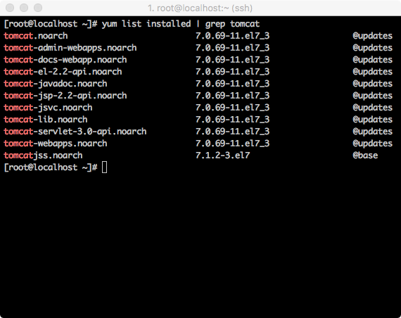</p>
<ul>
<li>설치가 되어 있지 않은 경우는 아래의 명령어로 설치를 진행합니다.</li>
</ul>
<figure class="highlight bash"><table><tr><td class="gutter"><pre><span class="line">1</span><br></pre></td><td class="code"><pre><span class="line">$ yum install -y tomcat*</span><br></pre></td></tr></table></figure>
<p>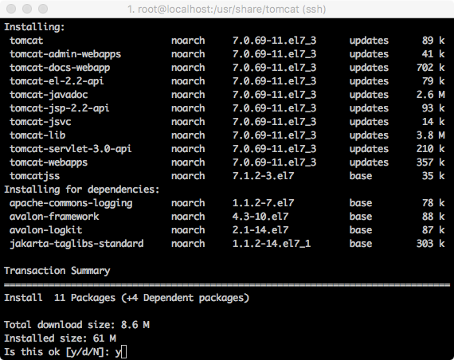</p>
<p><strong>Tomcat 도 같은 중요 인프라를 직접 소스를 컴파일해서 사용하는 방법도 있으나 직접 소스를 컴파일 하는 방법은 버그나 취약점도 직접 대응 해야하는 문제가 생겨 패키지 설치를 더 권장한다고 합니다.</strong></p>
<ul>
<li>Tomcat의 설치 된 경로는 아래와 같이 <code>/usr/share/tomcat</code> 에서 확인할 수 있습니다.</li>
</ul>
<p>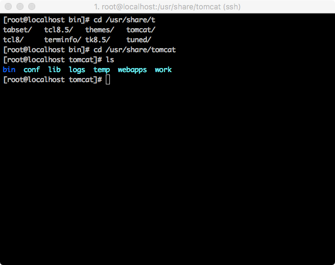</p>
<h3 id="Java-oracle-jdk-버전-설치"><a href="#Java-oracle-jdk-버전-설치" class="headerlink" title="Java oracle jdk 버전 설치"></a>Java oracle jdk 버전 설치</h3><ul>
<li>Tomcat의 설치의 경우 한가지를 더 설치를 해줘야 합니다. 아래를 살펴보시겠습니다.</li>
</ul>
<p>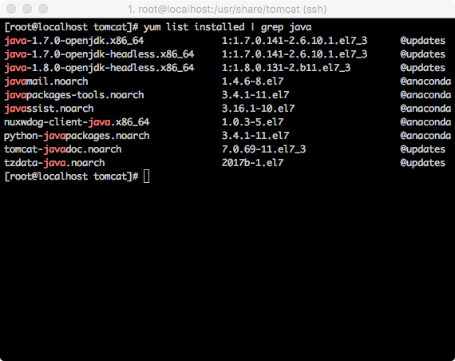</p>
<ul>
<li>위 스크린샷을 살펴보시면 jdk 가 오라클 사의 jdk 가 아닌 openjdk로 이루어져있습니다. 대부분의 소프트웨어가 오라클 사의 jdk로 개발 및 테스트가 이루어지기 때문에 오라클 사의 jdk를 설치하는 것이 더 안정적일 것입니다.</li>
<li>리눅스가 아닌 다른 PC 에서 오라클 사의 웹사이트로 들어가서 화면에서 아래쪽 jdk Download 항목으로 들어갑니다.</li>
<li><a href="http://www.oracle.com/technetwork/java/javase/downloads/index.html" target="_blank" rel="noopener">http://www.oracle.com/technetwork/java/javase/downloads/index.html</a></li>
</ul>
<p>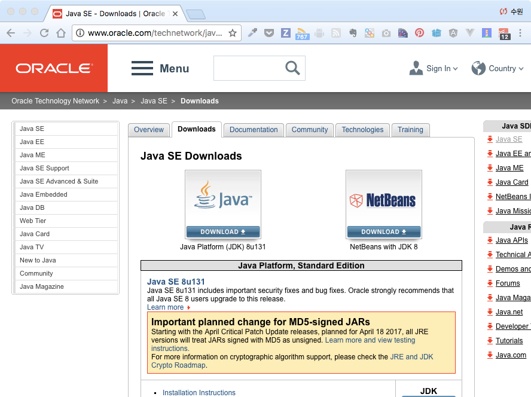</p>
<ul>
<li>jdk Download 부분을 클릭하여 들어가면 스크린샷과 같이 운영체제별 jdk 설치 파일들이 보이는데 사용하시는 컴퓨터가 64비트 일경우 linux x64 의 확장자 rpm 으로 되어 있는 파일을, 32비트 일 경우 x86 중 확장자 rpm으로 되어 있는 파일을 다운로드 받습니다.</li>
</ul>
<p>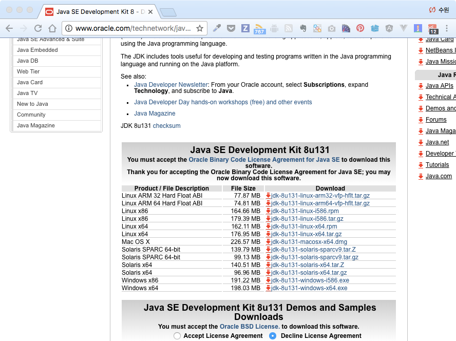</p>
<ul>
<li>다운로드 받으신후 크롬의 경우에는 브라우저 우측 메뉴에 <code>다운로드</code> 메뉴를 확인하실 수있습니다.</li>
<li>확인이 려우시면 주소창에서 <code>chrome://downloads</code> 를 입력하셔도 됩니다.</li>
<li>다운로드 창에서 아래와 같이 <code>링크 주소 복사</code> 를 클릭합니다.</li>
</ul>
<p>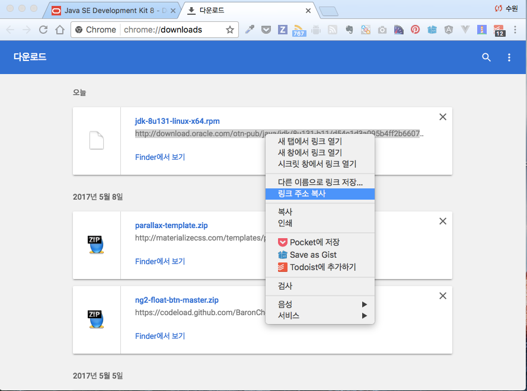</p>
<ul>
<li>다운로드 받을 링크 주소를 복사 한 후 다운로드 받을 만한 디렉토리로 이동하셔서 wget 명령어를 통해 파일을 다운로드 받습니다.</li>
<li>-c 옵션은 이어받기 옵션입니다.</li>
<li>그리고 주의할 점이 하나 있습니다. 이 글을 준비하면서 처음 알게 된 내용인데요, 파일을 다운로드 -&gt; 리눅스에서 wget 명령어를 실행하는 과정까지 시간을 빠르게 하셔야 합니다. 오라클 홈페이지의 보안인듯 한데요.</li>
<li>만약에 그 과정에서 시간이 오래 지체 되면 다운로드가 되지 않았습니다.글을 쓰다보니 길게 늘어졌는데 이상하게 다운로드가 안되었습니다.</li>
<li>다운로드를 눌러 놓고 빠르게 링크를 복사 한후 콘솔창에서 다운로드 받으시기를 바랍니다.</li>
</ul>
<figure class="highlight bash"><table><tr><td class="gutter"><pre><span class="line">1</span><br></pre></td><td class="code"><pre><span class="line">$ wget -c &#123;&#123;다운로드링크주소&#125;&#125;</span><br></pre></td></tr></table></figure>
<p>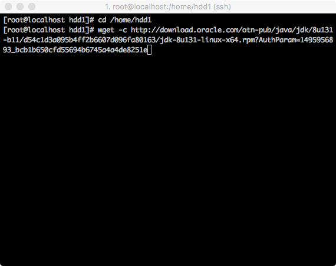<br>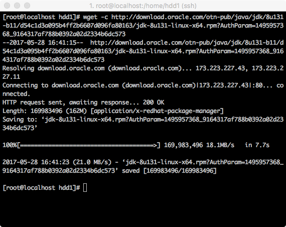</p>
<ul>
<li>다운로드 후 보시게 되면 확장자가 rpm이 아니라 링크 주소의 뒤 파라미터까지 같이 따라 붙게 되는데요 파일명을 mv 명령어로 수정 해줍니다. 파일명을 일일이 입력하시기 어려울 때는 파일명을 약간 입력하시고 TAB키를 실행하시면 자동완성이 됩니다~</li>
</ul>
<figure class="highlight bash"><table><tr><td class="gutter"><pre><span class="line">1</span><br></pre></td><td class="code"><pre><span class="line">$ mv jdk-8u131-linux-x64.rpm\?AuthParam\=1495957368_9164317af788b0392a02d2334b6dc573 jdk-8u131-linux-x64.rpm</span><br></pre></td></tr></table></figure>
<p>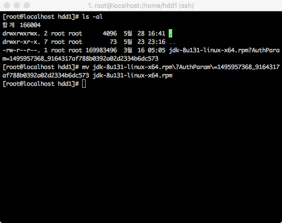</p>
<ul>
<li>이름을 변경하신 파일을 rpm 명령어로 설치를 진행합니다. i옵션은 설치, v옵션은 설치 정보 보여주기, h hash 문자로 설치 진행을 보여주는 옵션입니다.</li>
</ul>
<figure class="highlight bash"><table><tr><td class="gutter"><pre><span class="line">1</span><br></pre></td><td class="code"><pre><span class="line">$ rpm -ivh jdk-8u131-linux-x64.rpm</span><br></pre></td></tr></table></figure>
<p>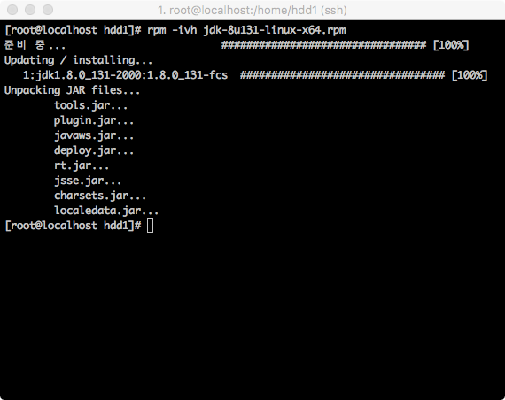</p>
<ul>
<li>기본적으로 Java는 여러버전을 한꺼번에 설치할 수 있습니다.</li>
<li>여러버전에서 기본 사용할 Java를 설정할수 있는데요. alternatives 명령어로 변경할 수 있습니다.</li>
<li>아래의 명령어를 입력하시고 설치하신 Java의 번호를 입력하시면 됩니다.</li>
</ul>
<figure class="highlight bash"><table><tr><td class="gutter"><pre><span class="line">1</span><br></pre></td><td class="code"><pre><span class="line">$ alternatives --config java</span><br></pre></td></tr></table></figure>
<p>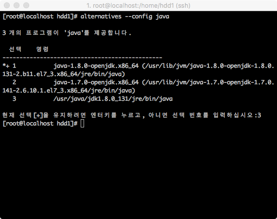</p>
<h3 id="Java-openjdk-버전으로-설치"><a href="#Java-openjdk-버전으로-설치" class="headerlink" title="Java openjdk 버전으로 설치"></a>Java openjdk 버전으로 설치</h3><ul>
<li>설치 옵션에 따라 Tomcat이 이미 설치가 되어 있을 수 있습니다.</li>
<li>확인은 아래의 명령어로 확인합니다.</li>
</ul>
<figure class="highlight bash"><table><tr><td class="gutter"><pre><span class="line">1</span><br></pre></td><td class="code"><pre><span class="line">$ yum list java*jdk-devel</span><br></pre></td></tr></table></figure>
<p><strong>설치</strong></p>
<ul>
<li>리스트 목록의 java 버전으로 설치 가능 합니다.</li>
</ul>
<figure class="highlight bash"><table><tr><td class="gutter"><pre><span class="line">1</span><br></pre></td><td class="code"><pre><span class="line">$ yum install java-1.8.0-openjdk-devel.x86_64</span><br></pre></td></tr></table></figure>
<p><strong>설치 확인</strong></p>
<figure class="highlight bash"><table><tr><td class="gutter"><pre><span class="line">1</span><br></pre></td><td class="code"><pre><span class="line">$ rpm -qa java*jdk-devel</span><br></pre></td></tr></table></figure>
<figure class="highlight bash"><table><tr><td class="gutter"><pre><span class="line">1</span><br></pre></td><td class="code"><pre><span class="line">$ javac -version</span><br></pre></td></tr></table></figure>
<h3 id="Tomcat-실행"><a href="#Tomcat-실행" class="headerlink" title="Tomcat 실행"></a>Tomcat 실행</h3><ul>
<li>설치가 완료되면 방화벽을 설정해줍니다.</li>
</ul>
<figure class="highlight bash"><table><tr><td class="gutter"><pre><span class="line">1</span><br><span class="line">2</span><br></pre></td><td class="code"><pre><span class="line">$ firewall-cmd --permanent --add-port=8080/tcp </span><br><span class="line">$ firewall-cmd --reload</span><br></pre></td></tr></table></figure>
<p><strong>방화벽 관련 파일 경로는 <code>/etc/firewalld/zones/publlic.xml</code> 파일에 설정 됩니다.</strong></p>
<ul>
<li>이제 서비스를 활성화 시키고 부팅시 실행이 되게 해줍니다.</li>
</ul>
<figure class="highlight bash"><table><tr><td class="gutter"><pre><span class="line">1</span><br></pre></td><td class="code"><pre><span class="line">$ systemctl <span class="built_in">enable</span> tomcat</span><br></pre></td></tr></table></figure>
<ul>
<li>서비스를 시작합니다.</li>
</ul>
<figure class="highlight bash"><table><tr><td class="gutter"><pre><span class="line">1</span><br></pre></td><td class="code"><pre><span class="line">$ systemctl start tomcat</span><br></pre></td></tr></table></figure>
<ul>
<li>서비스 접속을 웹브라우저를 통해 ip와 포트번호 8080을 입력하고 접속 확인을 합니다.</li>
<li>http://{아이피주소}:8080</li>
</ul>
<p></p>
<h3 id="참조"><a href="#참조" class="headerlink" title="참조"></a>참조</h3><ul>
<li><a href="https://suwoni-codelab.com/linux/2017/05/28/Linux-CentOS-Tomcat/" target="_blank" rel="noopener">https://suwoni-codelab.com/linux/2017/05/28/Linux-CentOS-Tomcat/</a></li>
<li><a href="https://zetawiki.com/wiki/CentOS_JDK_%EC%84%A4%EC%B9%98" target="_blank" rel="noopener">https://zetawiki.com/wiki/CentOS_JDK_%EC%84%A4%EC%B9%98</a></li>
</ul>
<p><a href="http://apache.mirror.cdnetworks.com/tomcat/tomcat-connectors/jk/tomcat-connectors-1.2.46-src.tar.gz" target="_blank" rel="noopener">http://apache.mirror.cdnetworks.com/tomcat/tomcat-connectors/jk/tomcat-connectors-1.2.46-src.tar.gz</a></p>

        </div>
        <footer class="article-footer">
            


    <a data-url="http://woonyzzang.github.com/2019/09/17/cent-os-tomcat-install/" data-id="ck0mm06kn000r429k4kflgjow" class="article-share-link"><i class="fa fa-share"></i>Share</a>
<script>
    (function ($) {
        $('body').on('click', function() {
            $('.article-share-box.on').removeClass('on');
        }).on('click', '.article-share-link', function(e) {
            e.stopPropagation();

            var $this = $(this),
                url = $this.attr('data-url'),
                encodedUrl = encodeURIComponent(url),
                id = 'article-share-box-' + $this.attr('data-id'),
                offset = $this.offset(),
                box;

            if ($('#' + id).length) {
                box = $('#' + id);

                if (box.hasClass('on')){
                    box.removeClass('on');
                    return;
                }
            } else {
                var html = [
                    '<div id="' + id + '" class="article-share-box">',
                        '<input class="article-share-input" value="' + url + '">',
                        '<div class="article-share-links">',
                            '<a href="https://twitter.com/intent/tweet?url=' + encodedUrl + '" class="article-share-twitter" target="_blank" title="Twitter"></a>',
                            '<a href="https://www.facebook.com/sharer.php?u=' + encodedUrl + '" class="article-share-facebook" target="_blank" title="Facebook"></a>',
                            '<a href="http://pinterest.com/pin/create/button/?url=' + encodedUrl + '" class="article-share-pinterest" target="_blank" title="Pinterest"></a>',
                            '<a href="https://plus.google.com/share?url=' + encodedUrl + '" class="article-share-google" target="_blank" title="Google+"></a>',
                        '</div>',
                    '</div>'
                ].join('');

              box = $(html);

              $('body').append(box);
            }

            $('.article-share-box.on').hide();

            box.css({
                top: offset.top + 25,
                left: offset.left
            }).addClass('on');

        }).on('click', '.article-share-box', function (e) {
            e.stopPropagation();
        }).on('click', '.article-share-box-input', function () {
            $(this).select();
        }).on('click', '.article-share-box-link', function (e) {
            e.preventDefault();
            e.stopPropagation();

            window.open(this.href, 'article-share-box-window-' + Date.now(), 'width=500,height=450');
        });
    })(jQuery);
</script>

        </footer>
    </div>
</article>

    <section id="comments">
    
        
    <div id="disqus_thread">
        <noscript>Please enable JavaScript to view the <a href="//disqus.com/?ref_noscript">comments powered by Disqus.</a></noscript>
    </div>

    
    </section>


                        </div>
                    </section>
                    <aside id="sidebar">
    <a class="sidebar-toggle" title="Expand Sidebar"><i class="toggle icon"></i></a>
    <div class="sidebar-top">
        <p>follow:</p>
        <ul class="social-links">
            
                
                <li>
                    <a class="social-tooltip" title="github" href="https://github.com/woonyzzang/" target="_blank">
                        <i class="icon fa fa-github"></i>
                    </a>
                </li>
                
            
                
                <li>
                    <a class="social-tooltip" title="cloud" href="http://j-portfolio.herokuapp.com/" target="_blank">
                        <i class="icon fa fa-cloud"></i>
                    </a>
                </li>
                
            
                
                <li>
                    <a class="social-tooltip" title="jsfiddle" href="https://jsfiddle.net/user/woonyzzang/fiddles/" target="_blank">
                        <i class="icon fa fa-jsfiddle"></i>
                    </a>
                </li>
                
            
        </ul>
    </div>
    <!-- github card -->
    
    <div class="github-card" data-github="woonyzzang" data-width="100%" data-height="150" data-theme="default"></div>
    
    <script src="/libs/github-cards/widget.min.js"></script>
    <!-- //github card -->
    
        
<nav id="article-nav">
    
        <a href="/2019/09/17/cent-os-apache-tomcat/" id="article-nav-newer" class="article-nav-link-wrap">
        <strong class="article-nav-caption">newer</strong>
        <p class="article-nav-title">
        
            Cent OS Apache와 Tomcat 연동
        
        </p>
        <i class="icon fa fa-chevron-right" id="icon-chevron-right"></i>
    </a>
    
    
        <a href="/2019/09/17/cent-os-apache-install/" id="article-nav-older" class="article-nav-link-wrap">
        <strong class="article-nav-caption">older</strong>
        <p class="article-nav-title">Cent OS Apache 웹서버 설치</p>
        <i class="icon fa fa-chevron-left" id="icon-chevron-left"></i>
        </a>
    
</nav>

    
    <div class="widgets-container">
        
            
                
    <div class="widget-wrap widget-list">
        <h3 class="widget-title">categories</h3>
        <div class="widget">
            <ul class="category-list"><li class="category-list-item"><a class="category-list-link" href="/categories/App/">App</a><span class="category-list-count">6</span><ul class="category-list-child"><li class="category-list-item"><a class="category-list-link" href="/categories/App/Ionic/">Ionic</a><span class="category-list-count">6</span></li></ul></li><li class="category-list-item"><a class="category-list-link" href="/categories/Editor/">Editor</a><span class="category-list-count">10</span><ul class="category-list-child"><li class="category-list-item"><a class="category-list-link" href="/categories/Editor/SublimeText/">SublimeText</a><span class="category-list-count">3</span></li><li class="category-list-item"><a class="category-list-link" href="/categories/Editor/Visualstudio/">Visualstudio</a><span class="category-list-count">1</span></li><li class="category-list-item"><a class="category-list-link" href="/categories/Editor/Webstorm/">Webstorm</a><span class="category-list-count">6</span></li></ul></li><li class="category-list-item"><a class="category-list-link" href="/categories/Etc/">Etc</a><span class="category-list-count">2</span><ul class="category-list-child"><li class="category-list-item"><a class="category-list-link" href="/categories/Etc/Log/">Log</a><span class="category-list-count">2</span></li></ul></li><li class="category-list-item"><a class="category-list-link" href="/categories/FrontEnd/">FrontEnd</a><span class="category-list-count">57</span><ul class="category-list-child"><li class="category-list-item"><a class="category-list-link" href="/categories/FrontEnd/Angular-js/">Angular.js</a><span class="category-list-count">2</span></li><li class="category-list-item"><a class="category-list-link" href="/categories/FrontEnd/Backbone-js/">Backbone.js</a><span class="category-list-count">6</span></li><li class="category-list-item"><a class="category-list-link" href="/categories/FrontEnd/D3-js/">D3.js</a><span class="category-list-count">9</span></li><li class="category-list-item"><a class="category-list-link" href="/categories/FrontEnd/Javascript-js/">Javascript.js</a><span class="category-list-count">20</span></li><li class="category-list-item"><a class="category-list-link" href="/categories/FrontEnd/Node-js/">Node.js</a><span class="category-list-count">1</span></li><li class="category-list-item"><a class="category-list-link" href="/categories/FrontEnd/React-js/">React.js</a><span class="category-list-count">12</span></li><li class="category-list-item"><a class="category-list-link" href="/categories/FrontEnd/Require-js/">Require.js</a><span class="category-list-count">2</span></li><li class="category-list-item"><a class="category-list-link" href="/categories/FrontEnd/Webpack/">Webpack</a><span class="category-list-count">3</span></li><li class="category-list-item"><a class="category-list-link" href="/categories/FrontEnd/jQuery/">jQuery</a><span class="category-list-count">2</span></li></ul></li><li class="category-list-item"><a class="category-list-link" href="/categories/OS/">OS</a><span class="category-list-count">25</span><ul class="category-list-child"><li class="category-list-item"><a class="category-list-link" href="/categories/OS/CentOS/">CentOS</a><span class="category-list-count">6</span></li><li class="category-list-item"><a class="category-list-link" href="/categories/OS/Mac/">Mac</a><span class="category-list-count">5</span></li><li class="category-list-item"><a class="category-list-link" href="/categories/OS/Ubuntu/">Ubuntu</a><span class="category-list-count">4</span></li><li class="category-list-item"><a class="category-list-link" href="/categories/OS/Windows/">Windows</a><span class="category-list-count">10</span></li></ul></li><li class="category-list-item"><a class="category-list-link" href="/categories/Server/">Server</a><span class="category-list-count">12</span><ul class="category-list-child"><li class="category-list-item"><a class="category-list-link" href="/categories/Server/ASP/">ASP</a><span class="category-list-count">4</span></li><li class="category-list-item"><a class="category-list-link" href="/categories/Server/AWS/">AWS</a><span class="category-list-count">1</span></li><li class="category-list-item"><a class="category-list-link" href="/categories/Server/Docker/">Docker</a><span class="category-list-count">6</span></li><li class="category-list-item"><a class="category-list-link" href="/categories/Server/Gitlab/">Gitlab</a><span class="category-list-count">1</span></li></ul></li><li class="category-list-item"><a class="category-list-link" href="/categories/Tools/">Tools</a><span class="category-list-count">5</span><ul class="category-list-child"><li class="category-list-item"><a class="category-list-link" href="/categories/Tools/APMSETUP/">APMSETUP</a><span class="category-list-count">1</span></li><li class="category-list-item"><a class="category-list-link" href="/categories/Tools/Fiddler/">Fiddler</a><span class="category-list-count">2</span></li><li class="category-list-item"><a class="category-list-link" href="/categories/Tools/OpenSSl/">OpenSSl</a><span class="category-list-count">1</span></li><li class="category-list-item"><a class="category-list-link" href="/categories/Tools/VMware/">VMware</a><span class="category-list-count">1</span></li></ul></li><li class="category-list-item"><a class="category-list-link" href="/categories/Web/">Web</a><span class="category-list-count">17</span><ul class="category-list-child"><li class="category-list-item"><a class="category-list-link" href="/categories/Web/CSS/">CSS</a><span class="category-list-count">6</span></li><li class="category-list-item"><a class="category-list-link" href="/categories/Web/Descktop/">Descktop</a><span class="category-list-count">2</span></li><li class="category-list-item"><a class="category-list-link" href="/categories/Web/HTML/">HTML</a><span class="category-list-count">1</span></li><li class="category-list-item"><a class="category-list-link" href="/categories/Web/Mobile/">Mobile</a><span class="category-list-count">5</span></li><li class="category-list-item"><a class="category-list-link" href="/categories/Web/Others/">Others</a><span class="category-list-count">3</span></li></ul></li></ul>
        </div>
    </div>


            
                
    <div class="widget-wrap widget-list">
        <h3 class="widget-title">archives</h3>
        <div class="widget">
            <ul class="archive-list"><li class="archive-list-item"><a class="archive-list-link" href="/archives/2019/09/">September 2019</a><span class="archive-list-count">4</span></li><li class="archive-list-item"><a class="archive-list-link" href="/archives/2019/08/">August 2019</a><span class="archive-list-count">22</span></li><li class="archive-list-item"><a class="archive-list-link" href="/archives/2019/03/">March 2019</a><span class="archive-list-count">1</span></li><li class="archive-list-item"><a class="archive-list-link" href="/archives/2018/11/">November 2018</a><span class="archive-list-count">3</span></li><li class="archive-list-item"><a class="archive-list-link" href="/archives/2018/04/">April 2018</a><span class="archive-list-count">2</span></li><li class="archive-list-item"><a class="archive-list-link" href="/archives/2017/11/">November 2017</a><span class="archive-list-count">3</span></li><li class="archive-list-item"><a class="archive-list-link" href="/archives/2017/10/">October 2017</a><span class="archive-list-count">4</span></li><li class="archive-list-item"><a class="archive-list-link" href="/archives/2017/08/">August 2017</a><span class="archive-list-count">1</span></li><li class="archive-list-item"><a class="archive-list-link" href="/archives/2017/07/">July 2017</a><span class="archive-list-count">5</span></li><li class="archive-list-item"><a class="archive-list-link" href="/archives/2017/06/">June 2017</a><span class="archive-list-count">4</span></li><li class="archive-list-item"><a class="archive-list-link" href="/archives/2017/05/">May 2017</a><span class="archive-list-count">32</span></li><li class="archive-list-item"><a class="archive-list-link" href="/archives/2017/04/">April 2017</a><span class="archive-list-count">10</span></li><li class="archive-list-item"><a class="archive-list-link" href="/archives/2017/03/">March 2017</a><span class="archive-list-count">25</span></li><li class="archive-list-item"><a class="archive-list-link" href="/archives/2017/02/">February 2017</a><span class="archive-list-count">19</span></li></ul>
        </div>
    </div>


            
                
    <div class="widget-wrap widget-float">
        <h3 class="widget-title">tag cloud</h3>
        <div class="widget tagcloud">
            <a href="/tags/angular-v1/" style="font-size: 10.91px;">angular v1</a> <a href="/tags/apmsetup/" style="font-size: 10px;">apmsetup</a> <a href="/tags/asp/" style="font-size: 12.73px;">asp</a> <a href="/tags/aws/" style="font-size: 10px;">aws</a> <a href="/tags/backbone/" style="font-size: 14.55px;">backbone</a> <a href="/tags/centos/" style="font-size: 14.55px;">centos</a> <a href="/tags/chrome/" style="font-size: 10.91px;">chrome</a> <a href="/tags/css/" style="font-size: 14.55px;">css</a> <a href="/tags/css3/" style="font-size: 14.55px;">css3</a> <a href="/tags/d3/" style="font-size: 16.36px;">d3</a> <a href="/tags/descktop/" style="font-size: 10.91px;">descktop</a> <a href="/tags/docker/" style="font-size: 14.55px;">docker</a> <a href="/tags/es6/" style="font-size: 12.73px;">es6</a> <a href="/tags/fiddler/" style="font-size: 10.91px;">fiddler</a> <a href="/tags/gitlab/" style="font-size: 10px;">gitlab</a> <a href="/tags/html/" style="font-size: 10px;">html</a> <a href="/tags/html5/" style="font-size: 10px;">html5</a> <a href="/tags/ionic-v1/" style="font-size: 13.64px;">ionic v1</a> <a href="/tags/ionic-v2/" style="font-size: 10px;">ionic v2</a> <a href="/tags/jquery/" style="font-size: 10.91px;">jquery</a> <a href="/tags/js/" style="font-size: 20px;">js</a> <a href="/tags/linux/" style="font-size: 17.27px;">linux</a> <a href="/tags/log/" style="font-size: 10.91px;">log</a> <a href="/tags/mac/" style="font-size: 13.64px;">mac</a> <a href="/tags/markdown/" style="font-size: 10px;">markdown</a> <a href="/tags/mobile/" style="font-size: 18.18px;">mobile</a> <a href="/tags/node/" style="font-size: 10px;">node</a> <a href="/tags/openssl/" style="font-size: 10px;">openssl</a> <a href="/tags/others/" style="font-size: 11.82px;">others</a> <a href="/tags/react/" style="font-size: 19.09px;">react</a> <a href="/tags/require/" style="font-size: 10.91px;">require</a> <a href="/tags/server/" style="font-size: 15.45px;">server</a> <a href="/tags/sublimeText/" style="font-size: 11.82px;">sublimeText</a> <a href="/tags/tip/" style="font-size: 10.91px;">tip</a> <a href="/tags/ubuntu/" style="font-size: 12.73px;">ubuntu</a> <a href="/tags/visualstudio/" style="font-size: 10px;">visualstudio</a> <a href="/tags/visualsvn/" style="font-size: 10px;">visualsvn</a> <a href="/tags/vmware/" style="font-size: 10.91px;">vmware</a> <a href="/tags/webpack/" style="font-size: 11.82px;">webpack</a> <a href="/tags/webpack-v2/" style="font-size: 10.91px;">webpack v2</a> <a href="/tags/webstorm/" style="font-size: 14.55px;">webstorm</a> <a href="/tags/windows/" style="font-size: 18.18px;">windows</a>
        </div>
    </div>


            
                
    <div class="widget-wrap widget-list">
        <h3 class="widget-title">links</h3>
        <div class="widget">
            <ul>
                
                    <li>
                        <a href="http://j-portfolio.herokuapp.com/dev/cms/">CMS Theme</a>
                    </li>
                
                    <li>
                        <a href="http://j-portfolio.herokuapp.com/dev/listmap/listmap.xml">Markup Listmap</a>
                    </li>
                
                    <li>
                        <a href="https://github.com/woonyzzang/j-generator-css3">J Generator CSS3</a>
                    </li>
                
                    <li>
                        <a href="https://github.com/woonyzzang/j-html5-reference">J HTML5 Open Reference</a>
                    </li>
                
                    <li>
                        <a href="https://github.com/woonyzzang/j-prototype">J Prototype</a>
                    </li>
                
                    <li>
                        <a href="https://github.com/woonyzzang/j-draft-design">J Draft Design Gallery</a>
                    </li>
                
                    <li>
                        <a href="https://github.com/woonyzzang/j-responsive-design-view">J Responsive Design View</a>
                    </li>
                
                    <li>
                        <a href="https://github.com/woonyzzang/j-memo">J Memo</a>
                    </li>
                
                    <li>
                        <a href="https://github.com/woonyzzang/j-hiworks-mail-notifier">J Hiworks Notifier</a>
                    </li>
                
                    <li>
                        <a href="https://github.com/woonyzzang/j-core-module">J Core Module</a>
                    </li>
                
                    <li>
                        <a href="https://github.com/woonyzzang/j-core-editor">J Core Editor</a>
                    </li>
                
                    <li>
                        <a href="https://github.com/woonyzzang/j-cheat-sheet-api">J Cheat Sheet API</a>
                    </li>
                
            </ul>
        </div>
    </div>


            
        
    </div>
</aside>
                </div>
            </div>
        </div>
        <footer id="footer">
    <div class="container">
        <div class="container-inner">
            <a id="back-to-top" href="javascript:;"><i class="icon fa fa-angle-up"></i></a>
            <div class="credit">
                <h1 class="logo-wrap">
                    <a href="/" class="logo"></a>
                </h1>
                <p>&copy; 2019 woonyzzang</p>
                <p>Powered by <a href="//hexo.io/" target="_blank">Hexo</a>. Theme by <a href="//github.com/ppoffice" target="_blank">PPOffice</a></p>
            </div>
        </div>
    </div>
</footer>
        
    
    <script>
    var disqus_shortname = 'hexo-theme-hueman';
    
    
    var disqus_url = 'http://woonyzzang.github.com/2019/09/17/cent-os-tomcat-install/';
    
    (function() {
    var dsq = document.createElement('script');
    dsq.type = 'text/javascript';
    dsq.async = true;
    dsq.src = '//' + disqus_shortname + '.disqus.com/embed.js';
    (document.getElementsByTagName('head')[0] || document.getElementsByTagName('body')[0]).appendChild(dsq);
    })();
    </script>


    
        <script src="/libs/lightgallery/js/lightgallery.min.js"></script>
        <script src="/libs/lightgallery/js/lg-thumbnail.min.js"></script>
        <script src="/libs/lightgallery/js/lg-pager.min.js"></script>
        <script src="/libs/lightgallery/js/lg-autoplay.min.js"></script>
        <script src="/libs/lightgallery/js/lg-fullscreen.min.js"></script>
        <script src="/libs/lightgallery/js/lg-zoom.min.js"></script>
        <script src="/libs/lightgallery/js/lg-hash.min.js"></script>
        <script src="/libs/lightgallery/js/lg-share.min.js"></script>
        <script src="/libs/lightgallery/js/lg-video.min.js"></script>
    


<!-- Custom Scripts -->
<script src="/js/main.js"></script>

    </div>
</body>
</html>
